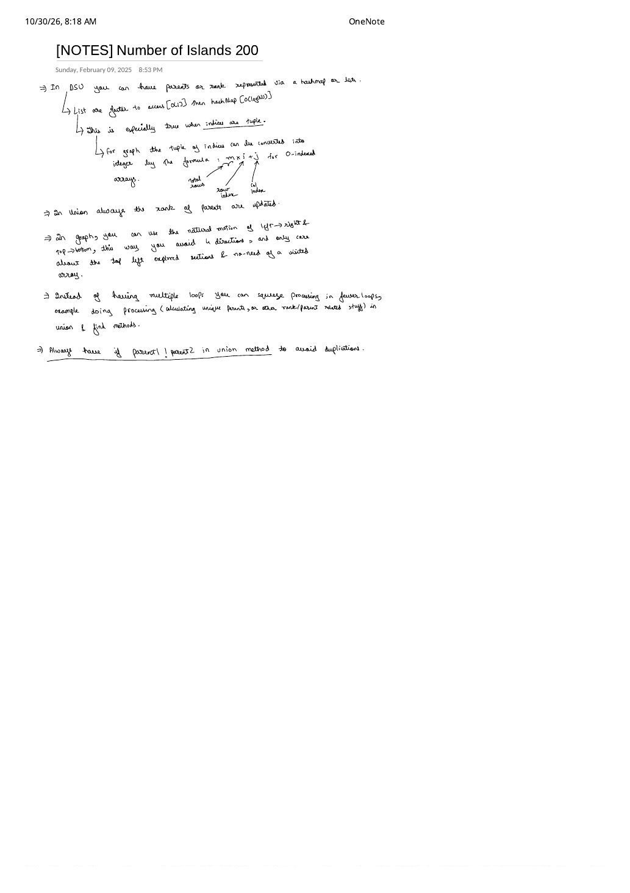

LC 200: Number of Islands — 1D Grid Flattening, 2-Direction Scan & Live DSU Counting
Expanded from handwritten competitive coding study note: 02_NOTES_Number_of_Islands_200.pdf (dated Feb 9, 2025) · View original handwritten page
1. Problem Statement & Why Study DSU on Grids?
Given an $R \times C$ binary grid grid of '1's (land) and '0's (water), return the number of islands. An island is formed by connecting adjacent land cells horizontally or vertically (4-directionally) and is surrounded by water ($1 \le R, C \le 300$).
While DFS or BFS flood-fill solves static LC 200 cleanly, building muscle memory for grid DSU pays off immediately whenever:
- Land cells appear dynamically online (e.g., LC 305: Number of Islands II, where re-running DFS per query costs $\mathcal{O}(Q \cdot R \cdot C)$ while DSU updates in $\mathcal{O}(\alpha(RC))$ per query).
- You cannot mutate the input
gridin place and want predictable non-recursive stack usage (DFS recursion on a $300 \times 300$ snake island can reach depth $90{,}000$). - You need component sizes simultaneously (e.g., LC 827: Making A Large Island).
2. Five Engineering Optimizations from the Handwritten Sheet
Rather than just pasting code, 02_NOTES_Number_of_Islands_200.pdf distills five practical lessons learned while optimizing grid Union-Find:
Optimization 1: Flat 1D Arrays Beat Tuple Hash Maps
When grid coordinates are pairs $(i, j)$, beginners often reach for unordered_map<pair<int,int>, ...> or a Python dictionary parent[(i, j)]. However, contiguous 1D arrays provide true $\mathcal{O}(1)$ direct memory indexing with zero tuple allocations, hashing overhead, or bucket collisions (nor $\mathcal{O}(\log N)$ tree-map lookups).
In a 0-indexed grid with $R$ rows and $C$ columns, flatten every coordinate $(i, j)$ ($0 \le i \lt R$, $0 \le j \lt C$) into $[0, R \cdot C - 1]$ via row-major order:
Subtle Axis Trap in the Handwritten Margin: Multiply by Columns $C$, Not Rows $R$!
In the handwritten note's margin diagram under $m \times i + j$, the leftmost arrow labels $m$ as "total rows". Be super careful on non-square grids ($R \ne C$)! Each complete row spans $C$ columns (row width), so advancing row $i$ by $1$ must jump $C$ slots.
Counterexample if you use $R \cdot i + j$ on a $2 \times 4$ grid ($R = 2, C = 4$): Cell $(0, 2)$ maps to $2 \cdot 0 + 2 = 2$, and cell $(1, 0)$ also maps to $2 \cdot 1 + 0 = 2$—colliding two completely unrelated cells! Using $C \cdot i + j$ maps $(0, 2) \mapsto 2$ and $(1, 0) \mapsto 4$ without collision.
Optimization 2: Natural Raster Motion Needs Only 2 Directions (and No visited Array!)
During DFS/BFS, you must explore all 4 neighbors $(\pm 1, 0), (0, \pm 1)$ and maintain a visited matrix to prevent infinite ping-pong loops. In DSU, we iterate in deterministic raster order: $i = 0 \to R - 1$ (top $\to$ bottom) and $j = 0 \to C - 1$ (left $\to$ right).
Every horizontal adjacency $(i, j - 1) \leftrightarrow (i, j)$ is seen when the scan reaches the right cell $(i, j)$, and every vertical adjacency $(i - 1, j) \leftrightarrow (i, j)$ is seen when the scan reaches the bottom cell $(i, j)$. Thus:
- Each land cell only needs to look backward at its Top neighbor $(i - 1, j)$ and Left neighbor $(i, j - 1)$ (or equivalently Right & Down).
- Checking 2 directions instead of 4 halves the inner-loop neighbor checks, and no
visitedarray is needed at all!
id 3 of a $2 \times 2$ island, Top (id 1) and Left (id 2) already share root 0; guarding pu != pv avoids subtracting islands a fourth time.Optimizations 3, 4 & 5: Squeeze Counting into union, Update Root Ranks, and Guard pu != pv
- Fuse root counting into
union: Instead of running an extra post-processing loop to collect unique roots of'1'cells in a hash set, maintain a live integerislands. Increment++islandswhenever you step onto a'1'cell, and decrement--islandsinsideunite(u, v)whenever two distinct components merge! - Always update rank on roots (
rnk[pu],rnk[pv]): Never compare or incrementrnk[u]on raw cell IDs—always resolve $p_u = \text{findPar}(u)$ and $p_v = \text{findPar}(v)$ first. - Guard
if (pu == pv) return;: As shown on the $2 \times 2$ island above, cell $(1, 1)$ touches $(0, 1)$ and $(1, 0)$, which are already linked through $(0, 0)$. Without the same-root guard, 4 land cells would suffer 4 decrements ($4 - 4 = 0$ islands instead of $1$!).
3. Brute / Standard $\to$ Optimal DSU Progression
| Approach | Time | Aux Space | Trade-offs |
|---|---|---|---|
| DFS / BFS Flood-Fill | $\mathcal{O}(R \cdot C)$ | $\mathcal{O}(R \cdot C)$ stack/queue | Fast for static grids, but mutates grid (or needs visited) and cannot handle dynamic online land additions in $\mathcal{O}(\alpha(RC))$. |
| Tuple-Dict DSU | $\mathcal{O}(R \cdot C \cdot \alpha(RC))$ | $\mathcal{O}(R \cdot C)$ hash map | Clean prototype, but high constant factor from tuple allocation and hashing on 4-direction lookups. |
| Flat 1D Array + 2-Dir DSU | $\mathcal{O}(R \cdot C \cdot \alpha(RC))$ | $\mathcal{O}(R \cdot C)$ flat ints | Cache-friendly $\mathcal{O}(1)$ array indexing, only 2 neighbor checks per land cell, non-mutating, and ready for LC 305 online queries. |
4. Step-by-Step Dry Run
Tracing $3 \times 4$ Grid ($R = 3, C = 4 \implies \text{id} = 4i + j$)
Row 0: 1 1 0 0 (ids 0, 1, 2, 3)Row 1: 1 1 0 1 (ids 4, 5, 6, 7)Row 2: 0 0 1 1 (ids 8, 9, 10, 11)•
(0,0) id=0: '1' $\to$ islands = 1.•
(0,1) id=1: '1' $\to$ islands = 2; Left id=0 is '1' $\to$ unite(1, 0) $\implies$ islands = 1 (root 0).•
(1,0) id=4: '1' $\to$ islands = 2; Top id=0 is '1' $\to$ unite(4, 0) $\implies$ islands = 1 (root 0).•
(1,1) id=5: '1' $\to$ islands = 2; Top id=1 $\to$ unite(5, 1) $\implies$ islands = 1; Left id=4 $\to$ findPar(5) == findPar(4) == 0 $\implies$ skipped by guard!•
(1,3) id=7: '1' $\to$ islands = 2 (Top '0', Left '0').•
(2,2) id=10: '1' $\to$ islands = 3 (Top '0', Left '0').•
(2,3) id=11: '1' $\to$ islands = 4; Top id=7 $\to$ unite(11, 7) $\implies$ islands = 3; Left id=10 $\to$ unite(11, 10) $\implies$ islands = 2!
5. Clean C++ & Python Implementations
#include <bits/stdc++.h>
using namespace std;
class Solution {
public:
int numIslands(vector<vector<char>>& grid) {
int R = grid.size(), C = grid[0].size();
vector<int> parent(R * C), rnk(R * C, 0);
iota(parent.begin(), parent.end(), 0);
auto findPar = [&](auto& self, int x) -> int {
return parent[x] == x ? x : parent[x] = self(self, parent[x]);
};
int islands = 0;
auto unite = [&](int u, int v) {
int pu = findPar(findPar, u), pv = findPar(findPar, v);
if (pu == pv) return; // Guard against corner duplicate merges!
if (rnk[pu] < rnk[pv]) swap(pu, pv);
parent[pv] = pu;
if (rnk[pu] == rnk[pv]) rnk[pu]++; // Update rank on root pu
--islands;
};
for (int i = 0; i < R; ++i) {
for (int j = 0; j < C; ++j) {
if (grid[i][j] != '1') continue;
++islands;
int cur = i * C + j; // Multiply row i by column count C!
if (i > 0 && grid[i - 1][j] == '1') unite(cur, (i - 1) * C + j); // Top
if (j > 0 && grid[i][j - 1] == '1') unite(cur, i * C + (j - 1)); // Left
}
}
return islands;
}
};class Solution:
def numIslands(self, grid: list[list[str]]) -> int:
R, C = len(grid), len(grid[0])
parent = list(range(R * C))
rank = [0] * (R * C)
islands = 0
def find(x: int) -> int:
while parent[x] != x:
parent[x] = parent[parent[x]] # Iterative path halving (zero recursion overhead)
x = parent[x]
return x
def unite(u: int, v: int) -> None:
nonlocal islands
pu, pv = find(u), find(v)
if pu == pv:
return
if rank[pu] < rank[pv]:
pu, pv = pv, pu
parent[pv] = pu
if rank[pu] == rank[pv]:
rank[pu] += 1
islands -= 1
for i in range(R):
for j in range(C):
if grid[i][j] != "1":
continue
islands += 1
cur = i * C + j
if i > 0 and grid[i - 1][j] == "1":
unite(cur, (i - 1) * C + j)
if j > 0 and grid[i][j - 1] == "1":
unite(cur, i * C + (j - 1))
return islands6. Complexity Proof & Key Edge Cases
- Time Complexity — $\mathcal{O}(R \cdot C \cdot \alpha(R \cdot C))$: We visit each of the $N = R \cdot C$ cells once and trigger at most $2N$
uniteoperations (Top and Left). With union by rank and path compression, $2N$ operations on $N$ elements run in $\mathcal{O}(N \cdot \alpha(N)) \approx \mathcal{O}(R \cdot C)$ time. - Space Complexity — $\mathcal{O}(R \cdot C)$: Two flat integer arrays
parentandrnkof length $R \cdot C$, without modifying the inputgrid. - Key Edge Cases:
- All water (
'0'everywhere):islandsnever increments and returns0(whereas returning rawdsu.componentsinitialized to $R \cdot C$ without ignoring water cells would erroneously count every'0'cell as a singleton!). - Single-row ($1 \times C$) or single-column ($R \times 1$) strips: Handled seamlessly by
i > 0andj > 0bounds together with row-width stride $C$. - Checkerboard grid: Diagonal
'1's do not connect (problem is strictly 4-directional), so Top and Left checks remainfalseand every'1'stays its own island.
- All water (
From the Handwritten Notes
View original handwritten page — 02_NOTES_Number_of_Islands_200.pdf (1D flattening, 2-direction scan & union guards)


02_NOTES_Number_of_Islands_200.pdf: List $\mathcal{O}(1)$ vs. HashMap lookup overhead, tuple-to-1D index formula, updating parent ranks, top-left natural raster traversal without visited, and guarding if parent1 != parent2.